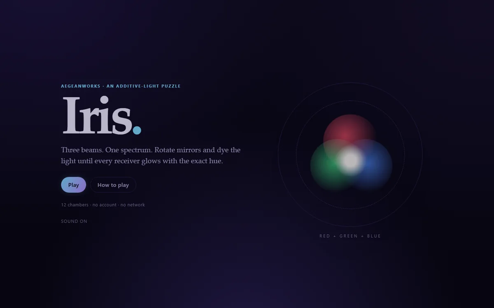
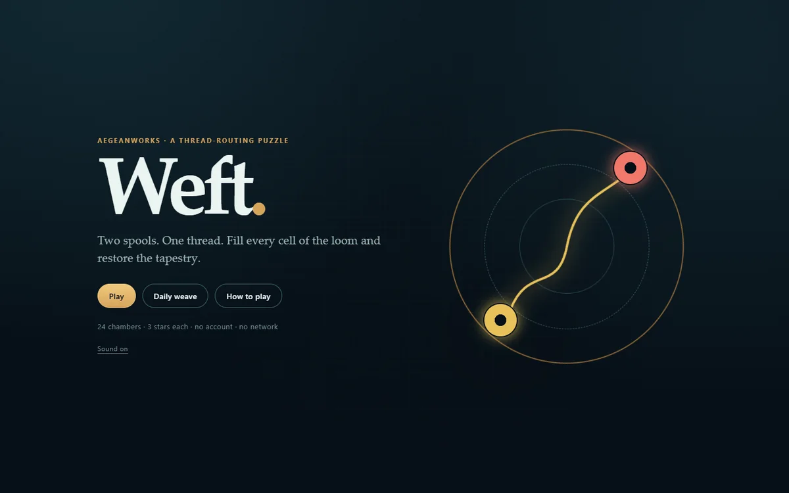
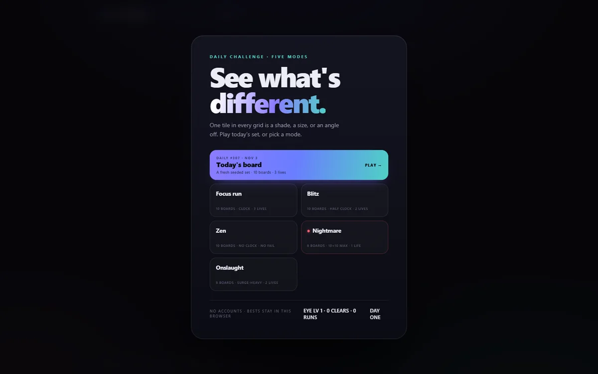
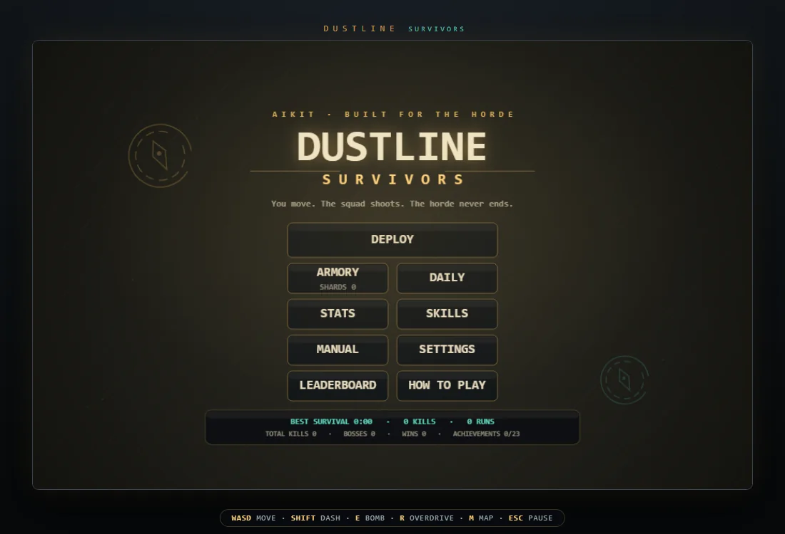
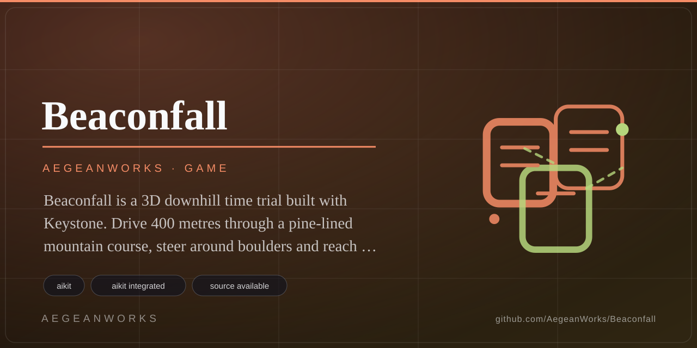
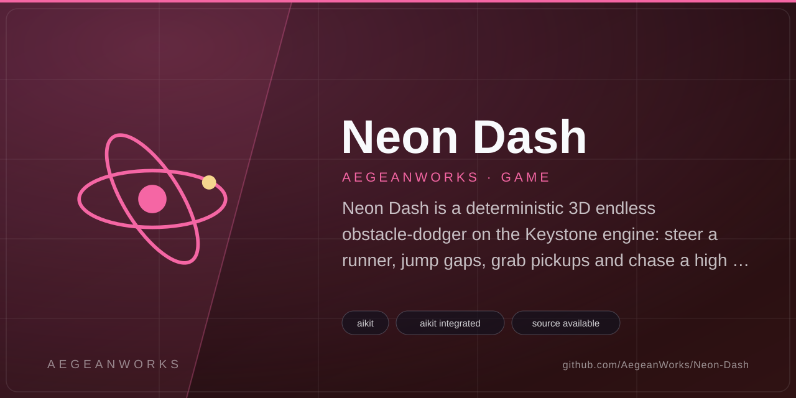
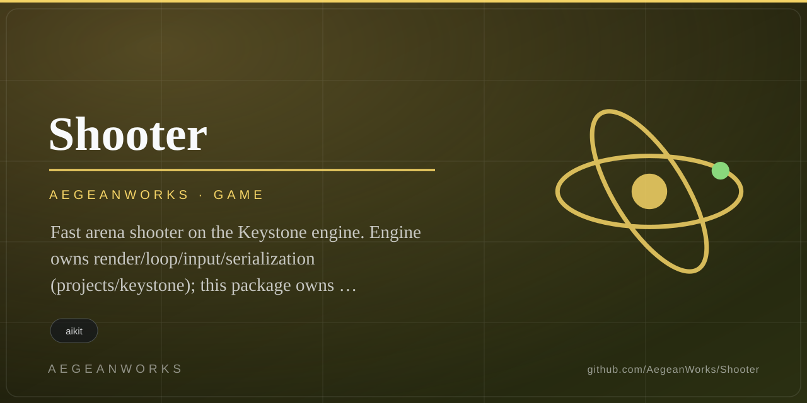
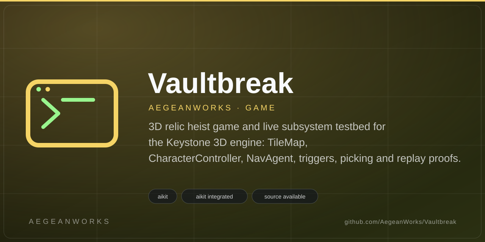
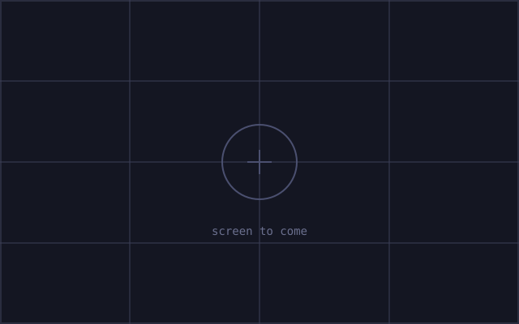

Cognitive systems
Agent frameworks, tool routing, layered memory, and explicit belief control — assembled from parts that can be replaced one at a time.
Independent software studio
AegeanWorks designs local-first AI systems, cognitive tooling, and computational research. Small composable parts, inspectable state, and software that keeps working when the network does not.
01 — Studio
AegeanWorks builds software where the interesting part is not the demo, but what happens on the third week of real use: state that survives a crash, memory that can be audited, and decisions that can be explained after the fact.
Agent frameworks, tool routing, layered memory, and explicit belief control — assembled from parts that can be replaced one at a time.
Delivery gates, hash-chained audit trails, and disruption recovery for coding agents that are allowed to change real repositories.
N=1 experimentation, neuro-acoustic calibration, and falsification-first research tooling built for one honest dataset at a time.
Simulations, puzzles, and games that make a complex mechanic legible by letting someone hold it in their hands.
Data and decisions stay on the machine that owns them. Remote models are optional, never required.
One responsibility per part, with a boundary clean enough that replacing it is boring.
Explicit schemas, typed state, and reproducible flows instead of prose that happens to work once.
Claims ship with the test, the seed, or the counter-example that could take them down.
02 — Selected work
A self-hosted, modular agent framework for persistent, tool-using systems. Workflows, long-term memory, retrieval, and a plugin surface in one runtime that can be read end to end.
View repository Delivery governanceCrash-resilient governance and delivery gates for AI coding agents: a versioned task ledger, commit-level verification, secret scanning, and per-project gates.
View repository Personal scienceA local-first, privacy-focused platform for rigorous N-of-1 self-experimentation: apply scientific statistics to your own life data, on your own machine.
View repository Neuro-acousticsA mathematically precise neuro-acoustic desktop application for binaural, monaural, and isochronic tones, with hardware-aware safety limits.
View repository03 - Live
Runnable browser apps and games, synced from their repositories with their exact version and commit. See every live app.
04 - Portfolio
74 public project repositories. Search them, or filter by topic.
An agent-first systems language with its own x86-64 backend. Cairn compiles straight to a Windows PE executable: no C compiler, no assembler, no linker, no libc, no runtime library.
Python · AL-1.1 · Updated 2026-11-21[ARCHIVED] Offline CLI that ranks code hotspots by combining git churn history with file complexity, so maintainers know where refactoring pays off.
Python · AL-1.1 · Updated 2026-11-15[ARCHIVED] Read-only duplicate file finder that groups byte-identical files by size and SHA-256 and reports reclaimable space.
Python · AL-1.1 · Updated 2026-11-15Dustline: Survivors is a top-down horde-survival shooter in the spirit of Vampire Survivors: an endless procedural world with open combat arenas, auto-firing weapons, seven maps, nineteen mob types plus NetWatch hunters, five rotating bosses with random affixes plus three mega bosses, a dedicated eight-boss Boss Rush mode, a 10-minute OPS...
JavaScript · AGL-1.1 · Updated 2026-11-19[ARCHIVED] A neon color-mixing puzzle: route red, green and blue beams through rotating mirrors and dye cells, blend exact hues, and light every receiver across three episodes.
JavaScript · AGL-1.1 · Updated 2026-11-07A local GGUF model server and coding-model tuner: load a model, serve an OpenAI-compatible API, tune it for code. Runs on the CPU or a Vulkan GPU; no cloud account, no telemetry.
JavaScript · AL-1.1 · Updated 2026-11-15[ARCHIVED] A local-first task manager for capturing, prioritizing, and completing work from a fast terminal workflow.
Python · AL-1.1 · Updated 2026-11-14[ARCHIVED] A seamless pattern studio: compose geometric tiles in the browser and export crisp SVG.
JavaScript · AL-1.1 · Updated 2026-11-08[ARCHIVED] A zero-dependency thread-routing puzzle: connect matching spools, cover every cell across 24 chambers and a daily weave. Read-only portfolio reference.
JavaScript · AGL-1.1 · Updated 2026-11-08[ARCHIVED] A complete, self-hosted AI agent framework. Visual flow editor · Persistent memory · RAG · Tools · Multi-platform messaging · Community marketplace.
Python · AL-1.1 · Updated 2026-11-19Crash-resilient governance and delivery gates for AI coding agents: versioned task ledger, commit-level verification, secret scanning and per-project gates. Free for personal use under AL-1.1; commercial use under ACL-1.0.
Python · AL-1.1 · Updated 2026-11-22[ARCHIVED] An AI that thinks in as few letters as possible, recursively over a long context. Everything is in this project: the alphabet, the budget, the thinker and the recursive engine. No network, no API key, no model weights. The core is standard library only; an optional adapter reads Pebble source when the sibling Pebble project is...
Python · AL-1.1 · Updated 2026-11-15[ARCHIVED] A provenance-first research knowledge graph for humans and AI agents. Ingest papers, record claims only with an exact quote and locator, link those claims to research questions, and let agents query a deterministic evidence graph instead of a pile of summaries.
Python · AL-1.1 · Updated 2026-11-07[ARCHIVED] Tamper-evident audit evidence for AI agents.
Python · AL-1.1 · Updated 2026-11-16[ARCHIVED] Aegean Licensing is integrated into AegeanWorks/AIKit. The Aegean License family (AL, AGL and ASL 1.1), the commercial program and certificate verification now ship as aegean_licensing/ plus licenses/ and COMMERCIAL.md.
Python · AL-1.1 · Updated 2026-11-19[ARCHIVED] A local-first, privacy-focused, and scientifically rigorous platform for personal N=1 experimentation.
Python · AL-1.1 · Updated 2026-11-07Falsification-first research codebase testing a Z3 circulant origin of the Koide lepton relation, with a separately labelled nematic-fluid UV speculation. Free non-commercial research under ASL-1.1; commercial use under ACL-1.0.
Python · ASL-1.1 · Updated 2026-11-17[ARCHIVED] Oral, blood-brain barrier-penetrant agents that soften hypothalamic perineuronal nets to restore insulin signaling in obesity.
Python · ASL-1.1 · Updated 2026-11-19[ARCHIVED] Primordia is a zero-dependency evolution sandbox: seed a biosphere, run its clock, and watch genomes vary, compete and speciate. A run replays exactly from its seed, and a fossil record keeps the story of what happened.
Python · AL-1.1 · Updated 2026-11-08[ARCHIVED] An N-body gravitational sandbox that runs in your terminal or in your browser. Nine carefully chosen worlds, a symplectic integrator, optional relativity and collision physics, live energy diagnostics, orbit trails, CSV and JSON export, and no dependencies outside the Python standard library.
Python · ASL-1.1 · Updated 2026-11-14[ARCHIVED] Standardized Turkish anamnesis (patient history) templates for common neurology complaints, helping neurologists, residents and medical students document assessments completely and systematically. Free personal use under AL-1.1; commercial use under ACL-1.0.
Python · AL-1.1 · Updated 2026-11-07A falsification-first research engine that turns questions into provenance-backed claims, executable kill tests, and auditable verdicts.
Python · ASL-1.1 · Updated 2026-11-19[ARCHIVED] The Ultimate Neuro-Acoustic Desktop Application
Python · AL-1.1 · Updated 2026-11-16[ARCHIVED] NeuroOptic is a research-grade visual oscillator for brainwave entrainment: configurable 1-120 Hz frequencies, hardware-aware safety limits and drift-free phase accumulation.
Python · AL-1.1 · Updated 2026-11-16[ARCHIVED] Your personal, privacy-focused AI assistant for creating Anki flashcards from any document.
Python · AL-1.1 · Updated 2026-11-20[ARCHIVED] Nöbet Wizard is a powerful, web-based application built with Python and Streamlit designed to automate the creation of monthly duty rosters (nöbet listesi). It handles complex constraints, personnel preferences, and fair distribution rules to generate optimal schedules in seconds.
Python · AL-1.1 · Updated 2026-11-15[ARCHIVED] A dependency-free, local-first spaced-repetition flashcard CLI. Add what you want to remember, study it on the days the SM-2 algorithm says it is due, and watch the schedule stretch as you recall and compress it when you forget. Everything stays in one readable JSON file on your machine.
Python · AL-1.1 · Updated 2026-11-15[ARCHIVED] An intelligent AI-powered desktop application that automatically organizes your files using Large Language Models (LLMs). Say goodbye to cluttered folders and let AI analyze, categorize, and rename your files with smart descriptive names!
Python · AL-1.1 · Updated 2026-11-21[ARCHIVED] Chronos is a lightweight, local-first developer focus and session orchestrator. It helps developers track deep-work sessions, manage micro-milestones, log interruptions, and generate productivity insights with zero external dependencies.
Python · AL-1.1 · Updated 2026-11-15[ARCHIVED] A zero-dependency terminal ruler for numeric series. gauge reads numbers from arguments, a file or a pipe and draws a sparkline, signed bars, a histogram, a box plot or a compact statistics block. stats --json is the machine surface for another tool.
Python · AL-1.1 · Updated 2026-11-14[ARCHIVED] A dependency-free, local-first expense ledger for the terminal. Record what you spend, list it, and see where the money went. Everything stays in one readable JSON file on your machine.
Python · AL-1.1 · Updated 2026-11-14[ARCHIVED] A focus timer you run on your own machine: one Python process, a browser page, no dependencies, no account and no network calls. Phases alternate focus and break, and every fourth break is a long one.
Python · AL-1.1 · Updated 2026-11-05[ARCHIVED] A tiny, dependency-free scripting language: lexer, parser, tree-walking evaluator and REPL. Built as an AIKit evaluation project — the process is under test as much as the code.
Python · AL-1.1 · Updated 2026-11-16Self-hosted photo server for Windows: an iPhone sends new photos over home Wi-Fi through Apple Shortcuts, no app needed, and an optional native Android app does the same, with a verified-hash cleanup and a gallery.
Python · AL-1.1 · Updated 2026-11-17[ARCHIVED] Prompt-driven AI music creation with an automated listener that scores how well each track fits the theme and can retry using the judge's own suggestions, exposed as a CLI (single tracks or a JSON batch) and Python library.
Python · AL-1.1 · Updated 2026-11-22[ARCHIVED] A small React + Vite surface for exercising AIKit's bounded UI guard. The app is deliberately simple: one screen, token-driven theming, and a labelled control for every interaction.
JavaScript · AL-1.1 · Updated 2026-11-05[ARCHIVED] Aegean Reforge is integrated into AegeanWorks/AIKit. Progressive, evidence-backed Git history auditing and safe repair now ships as reforge/ plus reforge.py.
Python · AL-1.1 · Updated 2026-10-28[ARCHIVED] A zero-dependency time zone meeting planner that runs entirely in the browser: add people and cities, compare every local hour side by side, find the overlap that works for everyone, then share it as a link or a calendar file.
JavaScript · AL-1.1 · Updated 2026-11-08[ARCHIVED] A zero-dependency, Photoshop-style image editor for the browser. Layers, filters, undo/redo and local export; images never leave the device.
JavaScript · AL-1.1 · Updated 2026-11-21[ARCHIVED] A visual perception gauntlet with a daily challenge: one tile in every grid is a shade, a size, or an angle off. Installable, offline-capable PWA.
JavaScript · AGL-1.1 · Updated 2026-11-08[ARCHIVED] ALDERVALE - a 2.5D medieval RPG with three renderers over one engine: a GPU WebGL2 build, a software pixel build and a dense ASCII terminal build.
Python · AGL-1.1 · Updated 2026-11-05A top-down action roguelike about rebuilding a shattered world from lost memories.
TypeScript · AGL-1.1 · Updated 2026-11-17[ARCHIVED] Tactical turn-based web dungeon crawler with procedural levels, Normal/Hard difficulty, class passives, status combos, per-floor omens, a turn-cost trap search and disarm, mimic chests, a two-way merchant, seed replay, five-slot equipment, side-by-side loot comparison, filterable inventory, a persistent lore codex, branching soul...
Python · AGL-1.1 · Updated 2026-11-08[ARCHIVED] CyberPulse is a retro-cyberpunk terminal hacking simulation game designed around empirical behavioral psychology: procedural puzzle nodes, seeded side-subnet hosts, ICE defenses, push-your-luck extraction, persistent career progression and a five-act story campaign, played in the terminal or the Web Cyberdeck.
Python · AGL-1.1 · Updated 2026-11-21[ARCHIVED] A small 4x4 tile-merge game you run on your own machine: one Python process, a browser page, no third-party dependencies, no account and no network calls. Slide the grid, join matching tiles, and chase 2048. The server owns the rules; the browser only renders the snapshot it returns.
Python · AGL-1.1 · Updated 2026-11-05[ARCHIVED] A neon light-routing puzzle game: rotate mirrors and splitters, split beams through prisms, fold space through portals, and charge every receiver across four episodes.
JavaScript · AGL-1.1 · Updated 2026-11-08A zero-dependency space flight and exploration simulator with an autonomous deep-space fleet, a procedural galaxy and a Windows cockpit: route reactor power, board derelicts, scoop fuel, command drones, fight and trade. Free personal play under AGL-1.1; commercial use under ACL-1.0.
Python · AGL-1.1 · Updated 2026-11-17[ARCHIVED] A fast, local-first web chat UI for any OpenAI-compatible model server, including ModelDuck. It is one static page and a few modules: no build step, no framework, no backend, and no telemetry.
JavaScript · AL-1.1 · Updated 2026-11-14[ARCHIVED] An interactive visual knowledge platform for learning material — easy drag-and-drop.
Python · AL-1.1 · Updated 2026-11-19A small, game-agnostic 3D engine core in Python: OpenGL 3.3 PBR rendering, scene graph, meshes/OBJ, fixed-step loop, rebindable input, animation, particles, audio, collision, replay, atomic saves, batch planning/merging, and a HUD/profiler overlay with an embedded bitmap font.
Rust · AL-1.1 · Updated 2026-11-22Native Windows hybrid CPU and GPU LLM inference engine in C++20 that treats system RAM and GPU VRAM as one coordinated memory tier.
C++ · AL-1.1 · Updated 2026-11-22AegeanWorks is an independent studio building local-first AI systems, cognitive tooling, and computational research. The work favors small composable parts, inspectable state, and software that still works when the network does not.
Python · AL-1.1 · Updated 2026-11-22[ARCHIVED] A deterministic agent with memory, a planner and a self-model: talk to it in a terminal, or run the ablation and telemetry batteries.
Python · AL-1.1 · Updated 2026-11-19[ARCHIVED] A local webhook inbox with replay. Point a webhook at it, inspect what arrived, then replay it to another target. Zero dependencies, Python 3.10+, localhost only.
Python · AL-1.1 · Updated 2026-11-19[ARCHIVED] Local-first capability probe: a falsifiable CLI that runs an inspectable battery of environment checks - filesystem round-trip, shell execution, git state, imports and timing - and writes a verifiable JSON report of what was actually measured.
Python · AL-1.1 · Updated 2026-11-19[ARCHIVED] AIKit development testbed. Trireme is an offline sailing route planner: deterministic shortest-time routing over small sea charts.
JavaScript · AL-1.1 · Updated 2026-11-19[ARCHIVED] Coda is a deterministic, dependency-free Rust sound compiler that turns a small textual score into reproducible stereo WAV audio, with seeded arrangement styles for locally generated music. It is published as a public repository at github.com/AegeanWorks/Coda.
Rust · AL-1.1 · Updated 2026-11-19[ARCHIVED] Sieve is a zero-dependency, deterministic regular-expression engine and ripgrep-like CLI written in Rust, with inspectable matching, a small pattern language and no network calls.
Rust · AL-1.1 · Updated 2026-11-19[ARCHIVED] Fast arena shooter on the Keystone engine. Engine owns render/loop/input/serialization (projects/keystone); this package owns state/rules/scene and loads via --game shooter.game:ShooterGame.
Python · AGL-1.1 · Updated 2026-11-20[ARCHIVED] Neon Dash is a deterministic 3D obstacle-dodger on the Keystone engine: start from a title screen with your run records, pick a difficulty, dodge tall walls and lane-tracking hunter drones, jump low barriers, chain orb combos and near misses, grab shield/slow/magnet power-ups, clear three checkpoints, and defeat the Warden boss...
Python · AGL-1.1 · Updated 2026-11-21[ARCHIVED] Multi-floor 3D relic heist game and live subsystem testbed for the Keystone Engine (projects/keystone): 5 Vault Floors, directional stealth vision cones and acoustic hearing, sweeping security cameras, hackable Security Terminal + TileMap.with_cell secret breach, bouncing EMP/Smoke orbs (resolve_sphere_aabb + ray_sphere), crouch...
Python · AGL-1.1 · Updated 2026-11-21[ARCHIVED] Local-first agent workspace: multi-conversation chat, file editing, git diffs, terminal, browser preview, and plans in one fast UI for any model API.
TypeScript · AL-1.1 · Updated 2026-11-22[ARCHIVED] Deterministic finite-state-machine verification, replay and golden-trace regression for event-driven code — with zero dependencies and plain-text traces you can review in a diff.
Rust · AL-1.1 · Updated 2026-11-22[ARCHIVED] Kiln is a zero-dependency, deterministic Rust CLI that forges reproducible JSON and CSV test fixtures from a tiny typed schema and a seed, so programmers get stable, reviewable test data offline.
Rust · AL-1.1 · Updated 2026-11-22[ARCHIVED] Knot is a zero-dependency C++17 include-graph analyzer for programmers: it parses include directives with an explicit state machine, detects cycles, quantifies transitive header cost, traces the exact include chain that pulls a header in, reports the reverse blast radius of changing a header, diffs a tree against a recorded baseline...
C++ · AL-1.1 · Updated 2026-11-22Noesis: evidence-led cognitive training app
TypeScript · AL-1.1 · Updated 2026-11-20[ARCHIVED] Beaconfall is a 3D downhill time trial built with Keystone. Drive 400 metres through a pine-lined mountain course, steer around boulders and reach the finish before the clock runs out. No single stationary line avoids every obstacle.
Python · AGL-1.1 · Updated 2026-11-21A Keystone extension for faster game creation. It emits canonical target manifests, deterministic Keystone asset packs that Keystone loads through its real registry, and generic asset packs copied from Shooter that a consumer can install as files plus a digest-verified manifest.
Python · AL-1.1 · Updated 2026-11-21[ARCHIVED] Idea Catcher is integrated into AegeanWorks/AIKit. Repository analysis, idea intake and cross-project integration register now ships as idea_catcher/ plus idea_catcher.py.
Python · AL-1.1 · Updated 2026-10-29[ARCHIVED] A polished local-first showcase that demonstrates AI-assisted planning, implementation, testing, and resilient CLI design.
Python · AL-1.1 · Updated 2026-11-05[ARCHIVED] Built for AIKit (ADR-315): headless proof sample for the AI-compat drive contract.
Python · AL-1.1 · Updated 2026-11-05[ARCHIVED] Built for AIKit (ADR-315): mock UI sample for the AI-compat drive proof, no runnable interface.
Python · AL-1.1 · Updated 2026-11-05[ARCHIVED] A sandboxed agent harness that turns coding tasks into green test suites with full transcripts and budgets.
Python · AL-1.1 · Updated 2026-11-18Traceglass is a local Rust terminal workbench for comparing ordered execution traces.
Rust · AL-1.1 · Updated 2026-11-2205 - Games
Screens from everything playable, released or still in development. Public titles open in the dossier; private builds show themselves without a link.
Beam, thread and tile systems solved on a static board.

A 4x4 tile-merge puzzle you run on your own machine: one Python process, a browser page, no dependencies, no account and no network calls. Slide, merge and chase 2048; the server owns the rules and the browser only renders

A neon light-routing puzzle game: rotate mirrors and splitters, fold beams through portals, and charge every receiver across three episodes

A neon color-mixing puzzle: route red, green and blue beams through rotating mirrors and dye cells, blend exact hues, and light every receiver across three episodes

A zero-dependency thread-routing puzzle: draw glowing threads between matching spools, fill every cell of the loom, and restore the tapestry across twenty-four chambers, with a fresh 7x7 daily weave. Static HTML/CSS/ES modules for any static host

A visual perception gauntlet with a daily challenge: one tile in every grid is a shade, a size, or an angle off
Procedural runs and horde survival, one seed at a time.

A top-down action roguelike about rebuilding a shattered world from lost memories

Tactical turn-based web dungeon crawler with procedural levels, Normal/Hard difficulty, class passives, status combos, per-floor omens, a turn-cost trap search and disarm, mimic chests, a two-way merchant, seed replay, five-slot equipment, side-by-side loot comparison, filterable inventory, a persistent lore codex, branching soul encounters

Dustline: Survivors is a top-down horde-survival shooter with endless procedural arenas, auto-firing weapons, 7 maps, 18 mob types, rotating bosses plus megas, Boss Rush mode and extraction banking
Terminal-first worlds with persistent progression.

A 2.5D medieval RPG drawn in tiny ASCII cells: low-poly 3D models baked into shaded sprites, voxel terrain, fog, day and night, water, quests, combat, loot, shops and saves. Python standard library only: no dependencies, no assets, no build step

A retro-cyberpunk terminal hacking game built on behavioral psychology: procedural puzzle nodes, ICE defenses, push-your-luck extraction, persistent progression and a five-act campaign. Python standard library only
Open systems you pilot, power-route and command.
Fast 3D games built on the Keystone engine.

A 3D downhill time trial built with Keystone. Drive 400 metres through a pine-lined mountain course, steer around boulders and reach the finish before the clock runs out

A deterministic 3D obstacle-dodger on the Keystone engine: start from a title screen with your run records, pick a difficulty, dodge tall walls and lane-tracking hunter drones, chain combos and defeat the Warden boss

Fast arena shooter on the Keystone engine. The engine owns rendering, the loop, input and serialization; this game owns state, rules and scene

A multi-floor 3D relic heist game and live subsystem testbed for the Keystone Engine: five vault floors, stealth vision cones and acoustic hearing, security cameras and a hackable terminal
Private builds still in development. No dossier yet; the screens speak for themselves.

Reserved for a private game in development; screenshots and pitch land here later.
06 - Research
Research at AegeanWorks is written as software: a hypothesis, a runnable test, and a result that can be reproduced or refuted by someone else.
GLP-1 signalling, hypothalamic circuitry, and perineuronal-net mechanics modelled as falsifiable systems rather than narrative.
PNNHow agents store, revise, and falsify beliefs without drifting — provenance, contradiction handling, and recall that can be audited.
LatticeEntrainment precision, perceptual safety, and measurable outcomes for binaural, monaural, and isochronic stimulation.
NeuralBeatLepton mass relations and fluid analogies, with speculation labelled as speculation and every claim shipped with its test.
Fluid-UniverseArchitecture questions treated as engineering constraints — attention, state, and self-model as components, not decoration.
NeuroCore07 - Licensing
AegeanWorks publishes source-available and open-source projects. AL-1.1 covers software, AGL-1.1 games, ASL-1.1 research and ACL-1.0 commercial use; some repositories keep GNU AGPL-3.0, Apache-2.0 or MIT, and each repository's LICENSE governs.
Free for personal, non-commercial use
Quoted per project
Already hold a commercial certificate?
Check its id, digest, status and scope against the public register. The certificate stays in your browser.
Full terms are published in COMMERCIAL.md . Licenses grant copyright permissions only; names, logos and creative assets are separate. Versions already published under GNU AGPL-3.0 keep that grant, including its commercial permissions.